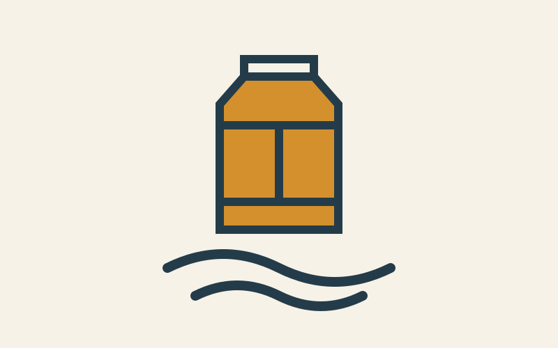

A place to make things useful.
Print, repair, and learn with your neighbors.
Plan your visitDemo hours: Tuesday–Saturday, 10 am–5 pm.

Visit the workshop
Fictional address: 12 Lantern Lane. Ask about access needs before your visit.
From small repairs to new ideas
This authored study places practical information before the longer workshop story.